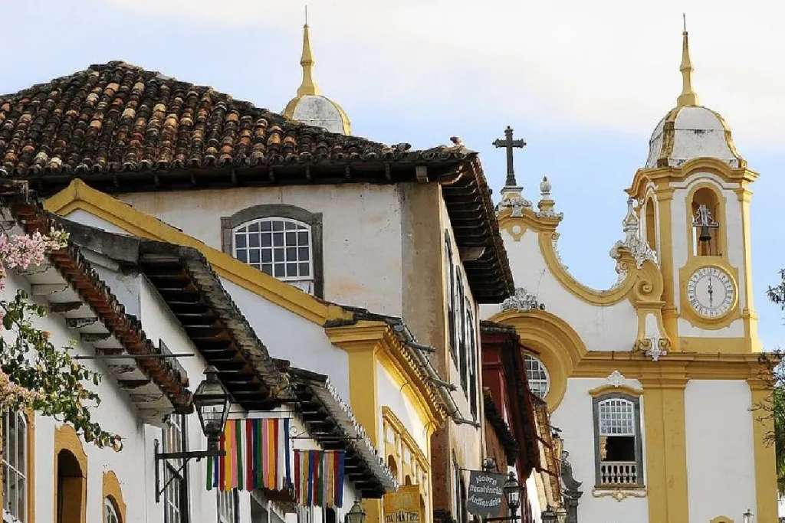

Cidades Históricas
Descubra a melhor época para visitar as cidades históricas de Minas Gerais e aproveitar ao máximo suas atrações culturais e arquitetônicas.
Saiba maisOuro Preto é uma cidade histórica localizada em Minas Gerais, Brasil. Fundada no século XVIII durante o ciclo do ouro, foi um dos principais centros da mineração no país. Seu nome vem do ouro escuro encontrado na região. A cidade é conhecida pela arquitetura colonial, igrejas barrocas (como a de São Francisco de Assis, de Aleijadinho) e importância na Inconfidência Mineira. Em 1980, foi tombada como Patrimônio Mundial pela UNESCO. Hoje, é um importante destino turístico e cultural.

Sabará é uma cidade histórica de Minas Gerais, Brasil, que teve grande importância durante o ciclo do ouro no século XVIII. Com ruas de pedra, casarões antigos e igrejas barrocas, preserva viva a memória do período colonial. Um dos principais pontos turísticos da cidade é a Igreja de Nossa Senhora do Ó, construída no século XVIII. Apesar da fachada simples, seu interior é ricamente decorado em estilo barroco e rococó, com entalhes em madeira e pinturas impressionantes. Localizada em um ponto alto, oferece também uma bela vista da região. Sabará é ainda conhecida por eventos culturais, como o tradicional Festival da Jabuticaba.
Serro é uma cidade histórica de Minas Gerais, fundada no século XVIII durante o ciclo do ouro e dos diamantes. Reconhecida por sua arquitetura colonial bem preservada, ruas de pedra e igrejas barrocas, a cidade guarda forte ligação com a cultura mineira. O Serro também é famoso pelo seu tradicional Queijo do Serro, considerado um dos mais antigos do Brasil e patrimônio cultural imaterial. Além da história e da gastronomia, o município se destaca pelas festas religiosas, paisagens naturais e pelo clima acolhedor, atraindo visitantes que buscam turismo cultural e ecológico.
Descubra a melhor época para visitar as cidades históricas de Minas Gerais e aproveitar ao máximo suas atrações culturais e arquitetônicas.
Saiba mais